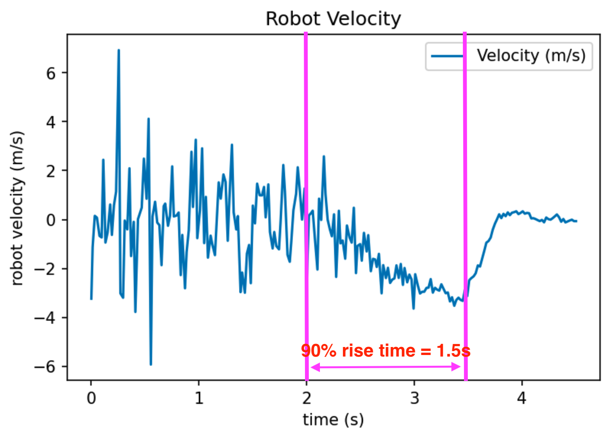
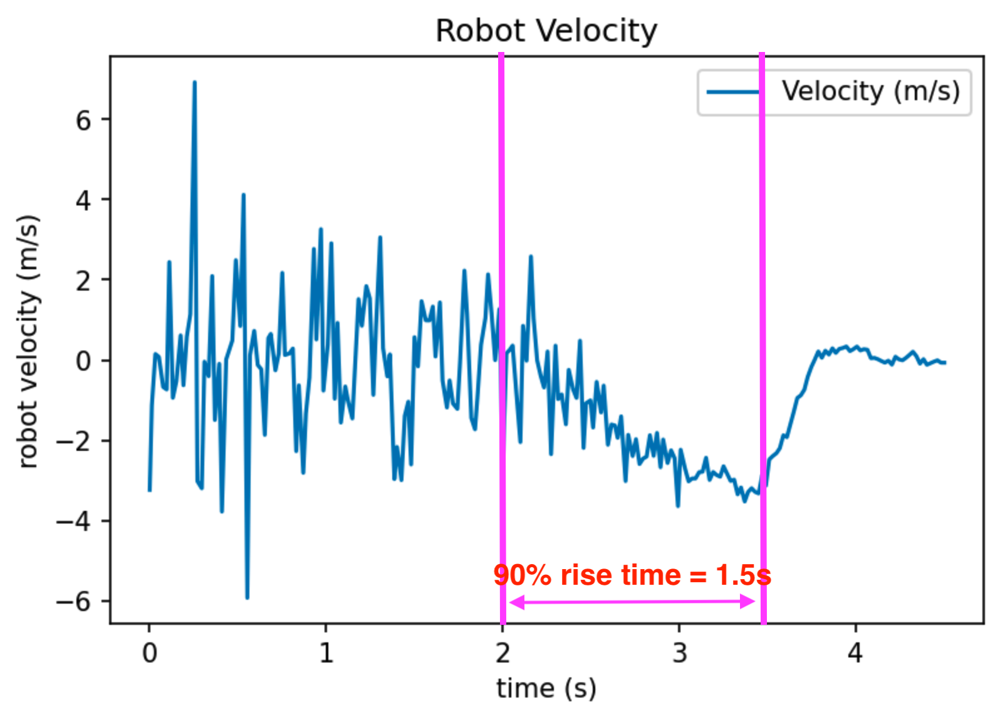

In this lab, we will implement Kalman filter on our robot. The Kalman filter is an algorithm to use a series of measurements observed over time, incorporating noise, and produce an estimate of an unknown variable such that the estimation is better than only looking at a single measurement. In other words, this is a form of sensor fusion. I will not go into the specifics of the algorithm or the derivations of the equations here as there are numerous great courses and videos online in which experts (instead of me) will do a much better job explaning.
The fact that Kirstin taught Kalman filter in class is not the only reason (though being an important one) why we are implementing it in this lab. In lab 6, we implemented PID control. In the stunt task I choose, "drift much?", the robot will drive fast towards a wall, and initiate a turn at certain distance such that the robot drifts and drives back without touching the wall. In lab 6, PID is used to initiate the drift (control orientation of the robot), but open loop control is used to determine when the robot should initiate the turn. A delay() function is used when the robot is driving towards the wall. This is not reliable, and I will need to use a slow speed to prevent the robot from crashing into the wall. I could use the ToF sensor to measure the distance between the robot and the wall, but the sampling frequency of the ToF sensor is slow, and it will not keep up with the fast speed of the robot.
Therefore, we will use Kalman filter to get a better estimate of the position of the robot. The Kalman filter in this lab will incorporate the ToF sensor measurement and a motion model. The goal is to have an accurate estimate of the robot's position even when a ToF sensor measurement is not yet available.
Step response to find steady state speed and 90% rise time
First, we will need to build a motion model for the robot. The robot's motion is simple: it drives toward the wall with a fixed motor input (the PWM value). The picture below comes from the instructor(Kirstin)'s slide on the state space equation for this task (robot driving towards a wall). It does a good job explaning how it works. The instructor's slide on state space equation of this task.
Looking at the state space equation on the bottom right, we will need to estimate d and m. We do so by doing a step response (the robot sits still in the beginning, and at certain point in time it gives the motors a fixed input) and measure the ToF sensor readings. As described in the slide, we can find d as u/x_dot, which is the steady state speed of the robot. Then we can find the 90% rising time calculate m by doing m = -dt_90 / ln(0.1). The matrices containing d and m in the state space equation are also referred to as the A and B matrices. If we know d and m, then we know all the terms in the state space equation.
The video below shows my robot being programmed to run towards the wall. The robot is constantly collecting ToF sensor readings. It starts from still, and at a certain point its motor PWM input becomes 180. This lasts for 1.5 seconds, and the robot begins to brake to prevent a hard crash into the wall. At the end, the robot sends back the ToF sensor readings and the timestamp at which the readings are taken.
Robot running towards a wall while measuring ToF sensor readings.
I am attaching the measured ToF readings and calculated velocity below. The ToF measurement curve is processed with a Savitzky-Golay filter to make it look less noisy. Since the timestamp data is also recorded by the robot, robot velocity is simply calculated by dividing the difference of two consecutive ToF measurements by the timestamp difference.
 ToF sensor readings as the robot runs toward the wall.

Velocity extracted from ToF sensor readings.
ToF sensor readings as the robot runs toward the wall.

Velocity extracted from ToF sensor readings.
 Velocity zoomed-in to time = [2.5, 4.5] seconds range.
Velocity zoomed-in to time = [2.5, 4.5] seconds range.
We can easily estimate the 90% rise time dt_90 = 1.5 seconds, and the steady state speed d = 3500 mm/s just by looking at these plots and drawing some lines.
The motor output is also recorded for sanity check as shown in the picture below.
Step motor output (PWM=180) as a function of time.
Plug in d = 3500 mm/s and dt_90 = 1.5 s into the equations in the slides, we can calculate the A and B matrices to be:
Since we are already talking about A and B matrices, I'm also noting here that C = [-1 0] as the robot is driving towards the wall.
Python implementation
The next step is to implement the Kalman filter in Python and do some sanity checking work. The picture below shows the Kalman filter's algorithm. We already have A, B, C matrices. u(t) and z(t) are data from the robot. miu(t-1) comes from the last estimate. All that is left in the algorithm are state uncertainty and measurement noise.
Kalman Filter algorithm from lecture slides.
For the Kalman filter to work, we need to specify the process noise and sensor noise covariance matrices. This sounds complicated. To put it simple, we will need to specify how much we trust the motion model versus my sensor measurements. I am choosing sigma_pos = 20mm, sigma_speed = 20 mm/s, and sigma_sensor = 20 mm. For these parameters, the covariance matrices sig_u and sig_z looks like:
What this means is that we believe the ToF sensor will most likely be less than 20mm off. This applies to the postion estimate of the robot as well. I choose these numbers arbitrarily, but I believe they are reasonable estimates.
Python implementation is simply putting the algorithm into code. We first initialize the initial position and estimates, and iterate over the time-of-flight data, running the Kalman filter in every step. I record the position estimates in an array to plot later.
The function kf() takes four arguments: the last estimate, the motor input, the estimated noise from last step, and the drag. It produces the updated new position/speed estimate and uncertainty. My kf function implementation is modified from that provided in the lab instruction here.

We can see that with my arbitrary selection of process noise and measurement noise, the Kalman filter estimation and the ToF sensor measurements agree pretty well. This makes sense because a ToF measurement is available in every step for this particular run. This will not be true on a real robot. However, this serves as a good sanity check for my selection of matrices A, B, C and my covariance matrices. It tells me that my Kalman filter implementation is likely correct.
 Kalman filter position estimation overlayed with true ToF readings. (sigma_1 = 20, sigma_2 = 20, sigma_z = 20)
Kalman filter position estimation overlayed with true ToF readings. (sigma_1 = 20, sigma_2 = 20, sigma_z = 20)
Though there is no need to adjust my covariance matrices, I changed the covariance matrices to different values to see how that changes the Kalman filter curve. Below are two plots with different covariance matrices values. The parameters chosen are provided in the caption.
 Kalman filter position estimation overlayed with true ToF readings. (sigma_1 = 20, sigma_2 = 20, sigma_z = 0)
Kalman filter position estimation overlayed with true ToF readings. (sigma_1 = 20, sigma_2 = 20, sigma_z = 0)
 Kalman filter position estimation overlayed with true ToF readings. (sigma_1 = 20, sigma_2 = 20, sigma_z = 100)
Kalman filter position estimation overlayed with true ToF readings. (sigma_1 = 20, sigma_2 = 20, sigma_z = 100)
In the first picture, measurement noise is chosen to be 0 mm. This means that we always trust the ToF sensor readings being correct. In this plot, the Kalman filter estimation and the ToF measurement curve overlaps exactly with each other. This makes sense because if the measurement noise is 0, then the Kalman filter will always believe in the ToF measurements.
In the second picture, measurement noise is chosen to be 100 mm. This means that we trust the motion model more than the ToF measurements. In this case, we see that the Kalman filter prediction curve has larger difference compared to when the measurement noise is 20 mm. This also agrees with my original prediction.
Robot (C++) implementation
Finally, we are putting the Kalman filter on the robot! Here is the general workflow of the robot.
- The robot starts with motor input = 0. It sits still. It is collecting ToF sensor value.
- At time = 1 second, the robot starts driving forward towards the wall with PWM = 180.
- When the robot is driving forward, if ToF sensor reading is available, it runs both the prediction and update step of the Kalman filter.
- If ToF sensor reading is not available, it runs only the prediction step of the Kalman filter. Only the motion model is taken into consideration.
- The robot logs down both the ToF reading, the KF estimate of position, and the timestamp. Whenever the ToF reading is not available, the last available ToF sensor reading is logged.
- At the end of the execution, the robot applies active brake and sends data back to the PC.
Here I will show my Kalman filter implementation in the robot. This is important because going from Python to CPP is not trivial work!! First, all the constant parameters and matrices are defined. These constants will not be updated during runtime with the exception of sig and x_val, which will be updated by the KF function.
Before running the actual Kalman filter algorithm, the kf_init function is called to initialize x_val. This function is called with the last ToF reading before the robot starts driving.
Then it is the actual KF algorithm. My KF implementation is adapted from Anya's code. Please checkout Anya's amazing website here. In addition to the dt argument, which specifies the time elapsed between two kf() function calls, the function also has two optional parameters: only_predictive and sensor_measurement. When only_predictive is set to true, it means a ToF sensor reading is not yet available, and the Kalman filter only runs the predictive step. Otherwise, the Kalman filter runs both the predictive and update step, and it incorporates the ToF sensor measurement in the argument sensor_measurement. After execution of this function, values in x_val and sig will be updated.
Here is a video of the robot driving forward with the Kalman filter running. This video looks very similar to the step response video, but they are different!! Trust me!
Robot running towards a wall while running KF filter (motion model + ToF readings).Robot KF filter results and discussion
Here is the plot showing ToF measurement and KF estimate of position over time when running on a real robot. First, we are noticing some stepping effect in the ToF measurement curve. This is due to the fact that ToF curve will refer to the last available reading when a new reading is not yet available.
 Robot-calculated Kalman filter estimation of position overlayed with robot ToF readings. When ToF reading is not available at a timestamp, the plot uses the last available ToF reading, thus creating the stepping effect on the ToF distance plot.
Robot-calculated Kalman filter estimation of position overlayed with robot ToF readings. When ToF reading is not available at a timestamp, the plot uses the last available ToF reading, thus creating the stepping effect on the ToF distance plot.
Then we can look at the KF prediction. We can see that the KF prediction is very smooth, much better than the ToF sensor measurement curve. Even when a new ToF sensor reading is not available, it keeps decreasing smoothly (updated by referring to the motion model). Its estimation also agrees very well with new ToF measurement when a new measurement becomes available. This is saying that the KF model is working very well (even better than I have expected!)
This surprisingly good result makes me confident that the robot will have a good estimate of its position when it's driving towards a wall despite the slow ToF sensor sampling frequency. In lab 8, the Kalman filter will be incorporated with PID control to signal the turning/drifting point.
(Weirdly, I feel like I should write something to wrap up this post. However, I believe what's contained in this post is more than enough for anyone to reproduce my results, and it is convincing enough to show that my implementation works very well, so I will leave it this way haha)